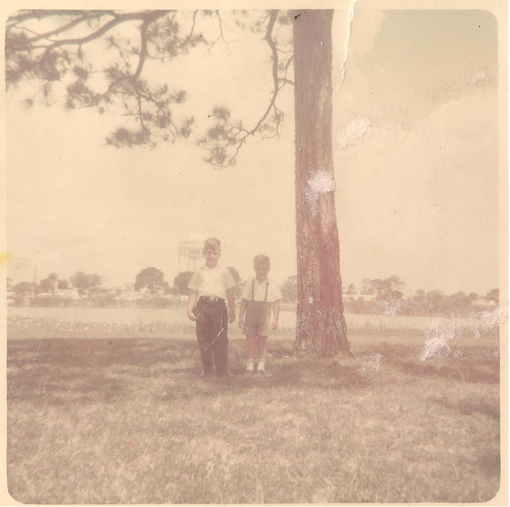
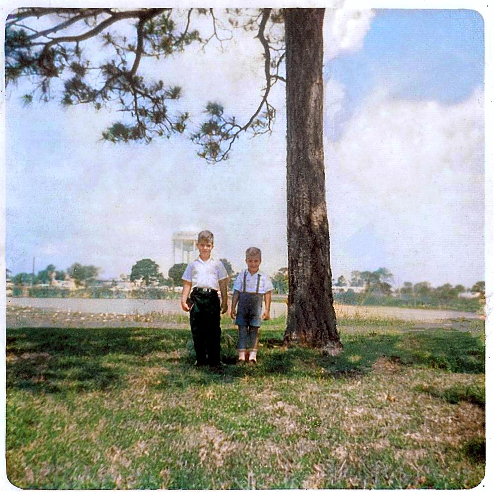
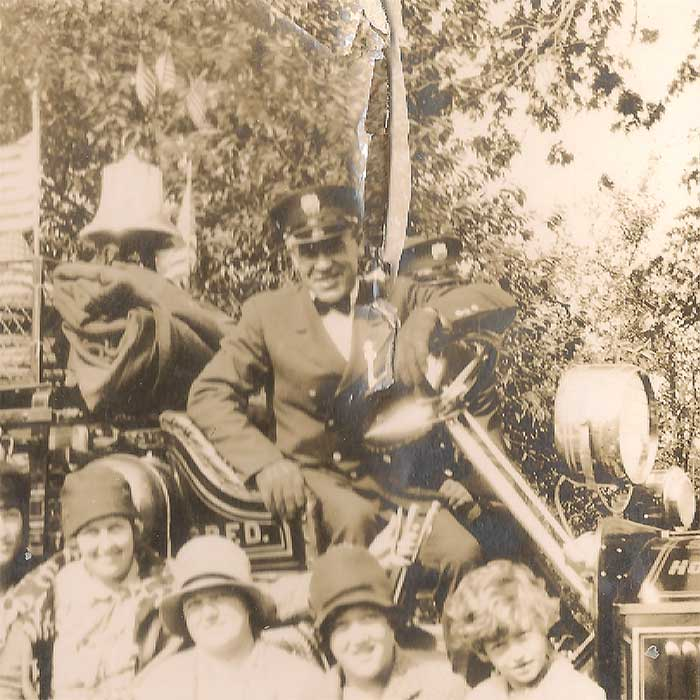
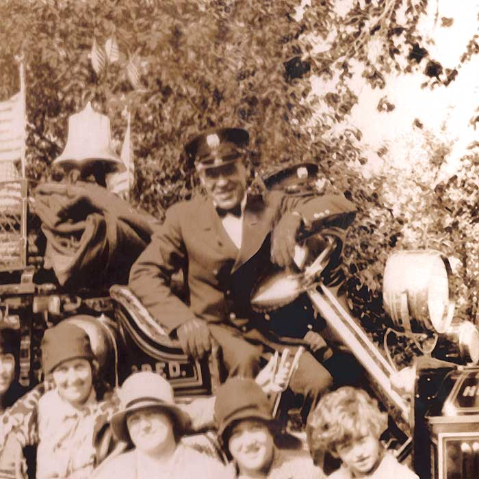
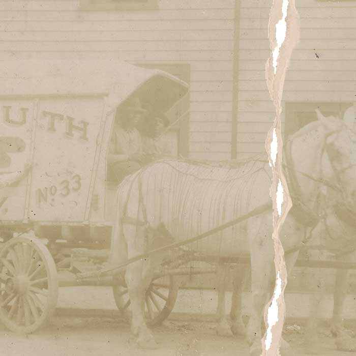
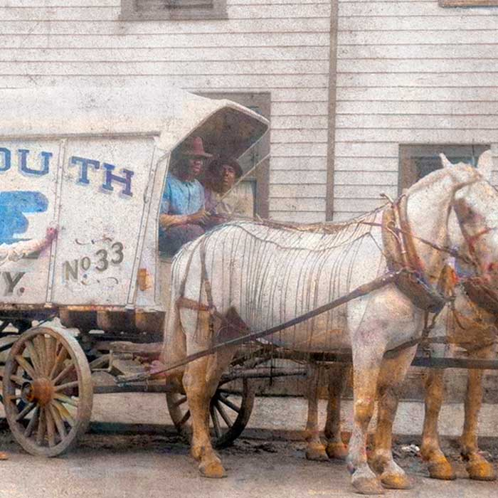

We successfully cope with tasks of varying complexity, provide long-term guarantees and regularly master new technologies.
Read More
Your photos will be hand cleaned to remove dust and photo cleaner to bring out the natural luster of the photo. Then will be digitally scanned using a high-resolution scanner to preserve your most precious memories.
We expertly fix damaged, faded, or torn photographs, bringing them back to life with meticulous care. Whether it's removing blemishes or reconstructing missing parts, we ensure your photos look like they were taken today.
We can breathe new life into black-and-white, sepia, and faded photographs by adding rich, natural colors. We carefully research and apply authentic hues to transform your vintage photos, making them more vibrant and lifelike.
We can handle the printing of your photos
We can breathe new life into black-and-white, sepia, and faded photographs by adding rich, natural colors. We carefully research and apply authentic hues to transform your vintage photos, making them more vibrant and lifelike.
Read More

Damaged photos don’t have to mean damaged memories. Our Tears and Creases service expertly repairs rips, folds, and creases, restoring your images to their original beauty. Let us bring your cherished photographs back to life with care and precision.
Read More

We can work on piecing together photos that have been torn apart, restoring them to their original glory. Reconstruction through meticulously aligning to repair each fragment, ensuring your cherished memories are whole again.
Read More

The time required for restoration depends on the complexity of the damage,number of photos, and backlog of other clients. Generally, it can take anywhere from a few days to a week, though larger bulk jobs will require more time.
We can repair a wide range of issues, including tears, scratches, stains, fading, water damage, and discoloration.
No, you can send us a high-resolution scan of the original photo if you have the ability to do
so.
However, without sending us the photo, or a high-resolution scan, it will be much harder to
restore the photo properly. We highly suggest sending us the photo for the best possible
results.
For best results, a scan of at least 600 DPI in TIFF format is best for restoration.
However, We accept various formats, including JPEG, TIFF, and PNG.
Yes, we can reconstruct missing parts of a photo using advanced techniques, though the results depend on the extent of the damage and available reference images.
We strive for customer satisfaction and offer revisions if you are not completely happy with the restoration. We will work with you to achieve the desired outcome.
We can provide you with a digital file, and a physical print.
Yes we do, depending on the amount of photos we can offer a discount. Bulk discounts start at 15 photos.